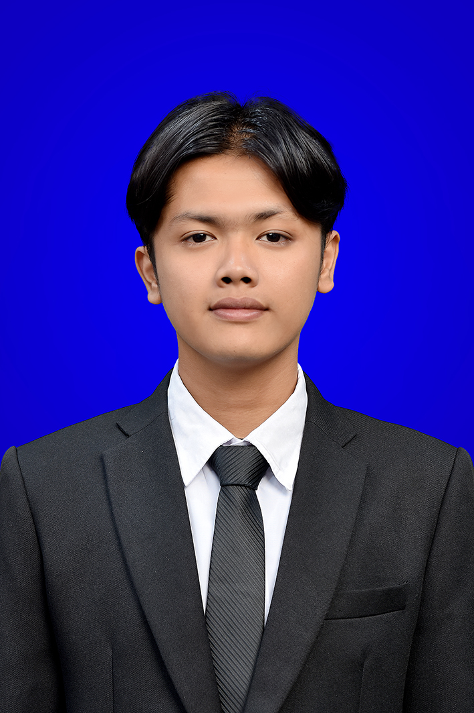
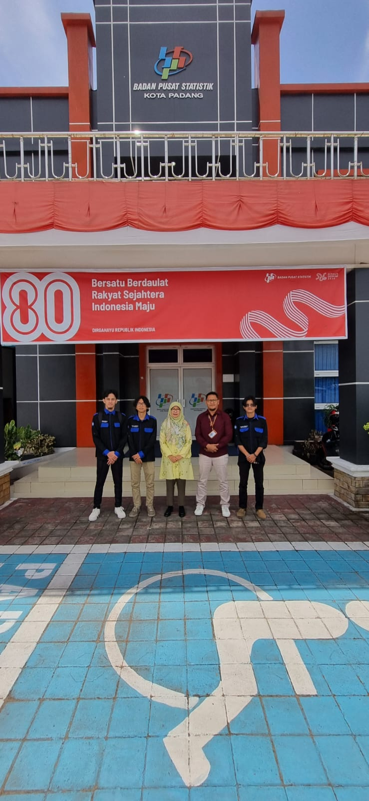
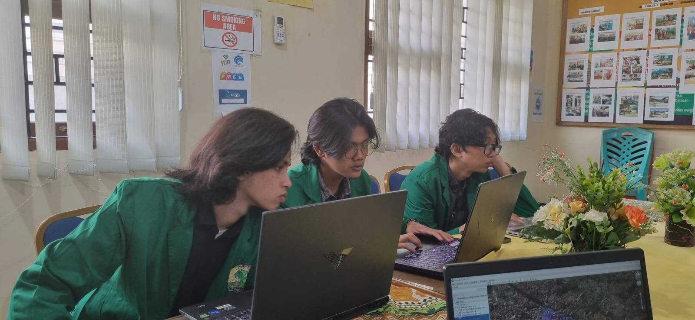
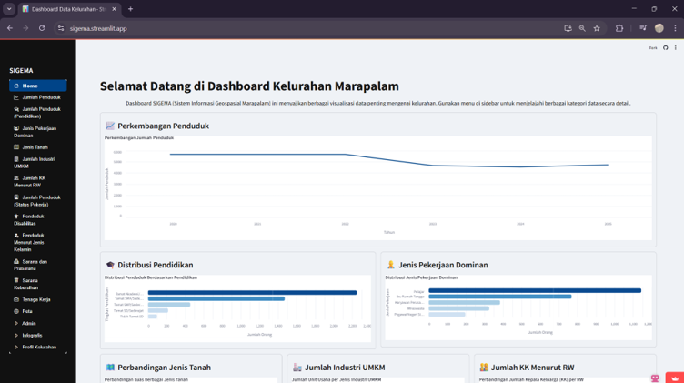
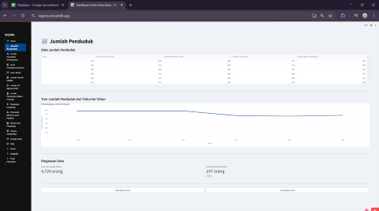
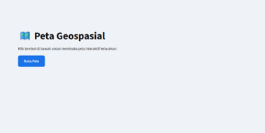
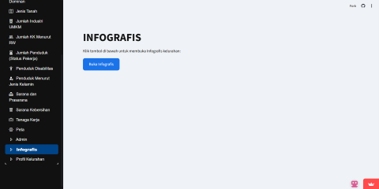

Data Science & Machine Learning
Mahasiswa Informatika di Fakultas Teknologi Informasi (FTI) yang berfokus pada pengembangan solusi berbasis data. Berpengalaman dalam membangun arsitektur Convolutional Neural Network (CNN) untuk klasifikasi citra, analisis data statistik, dan pengembangan web dashboard interaktif.

Saya sangat tertarik pada pemrosesan data, machine learning, dan pengembangan aplikasi berbasis cloud. Bagi saya, mengubah raw data menjadi insight yang dapat ditindaklanjuti dan disajikan dalam antarmuka yang ramah pengguna adalah inti dari teknologi yang bermanfaat.
Selama di Fakultas Teknologi Industri (FTI), saya terbiasa membangun project end-to-end, mulai dari analisis regresi, pemrosesan citra digital dengan arsitektur CNN, hingga mendeploy aplikasi menggunakan ekosistem Python dan Streamlit.
Kumpulan teknologi dan metode yang sering saya gunakan dalam pengembangan model AI dan aplikasi data.
Eksplorasi algoritma dan pengembangan sistem cerdas dari tugas riset hingga implementasi instansi.
Merancang dan membangun sistem informasi berbasis web untuk visualisasi data demografi dan infrastruktur kelurahan menggunakan Python dan Streamlit. Sistem ini mengintegrasikan Google Sheets sebagai database relasional secara real-time untuk memfasilitasi pembaruan data secara dinamis guna mendukung Program Desa Cantik.






Mengembangkan model klasifikasi gambar (Convolutional Neural Network) otomatis untuk mendeteksi kualitas pakan ternak sapi potong berdasarkan karakteristik visual seperti warna dan tekstur. Mengimplementasikan arsitektur ResNet50V2 dengan pipeline evaluasi yang kuat menggunakan Stratified 5-Fold Cross Validation untuk menjaga stabilitas performa model.
Melakukan analisis dan pengolahan dataset indikator kemiskinan Kota Padang periode 2010 hingga 2024. Menerapkan metode regresi linear dan analisis deret waktu (time series) untuk memproyeksikan pergerakan angka kemiskinan dan indikator ekonomi untuk tiga tahun ke depan guna membantu perancangan kebijakan.
Proyek pemrosesan citra digital yang ditujukan untuk mengklasifikasi dan mengekstraksi fitur visual pada biji jagung. Model ini dirancang untuk memisahkan biji jagung berkualitas baik dari yang cacat untuk mengoptimalkan proses produksi tepung di sektor agrikultur.
Membangun arsitektur website dashboard SIGEMA menggunakan framework Streamlit Python. Merancang sistem manajemen database berbasis Google Sheets, melakukan validasi data statistik kelurahan, dan menyajikan visualisasi data yang interaktif bersama tim pengembang dan pemangku kepentingan desa.
Menyiapkan minuman sesuai prosedur operasional standar, memastikan kalibrasi alat terjaga baik, serta mengelola transaksi dan stok material bar secara efisien.
Memimpin manajemen operasional bar, menjamin kontrol kualitas produk (QC), serta merumuskan standar pelatihan bagi karyawan baru.
Membantu perakitan panel listrik, pengujian kontinuitas arus, dan instalasi perangkat keras mematuhi protokol Keselamatan dan Kesehatan Kerja (K3).